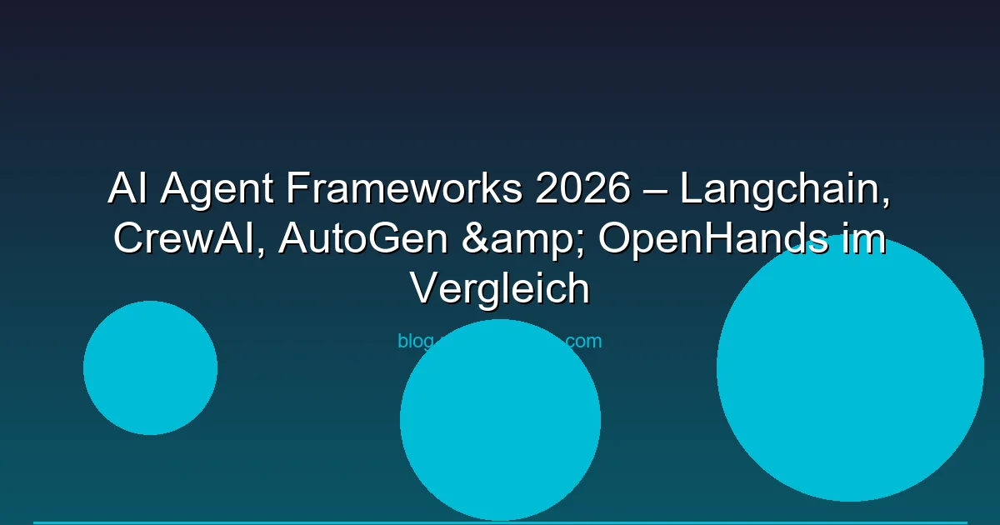

2026 ist das Jahr der AI Agents. Statt einfach nur Fragen an eine LLM zu stellen, bauten Entwickler eigenständige Agenten — Programme die planen, Tools nutzen, im Internet recherchieren und komplexe Aufgaben selbstständig lösen. Wir vergleichen die 5 wichtigsten AI-Agent-Frameworks und zeigen dir, welches Framework für welchen Use Case passt.
Was ist ein AI Agent? Ein AI Agent ist ein Programm, das ein LLM als "Gehirn" nutzt, um eigenständig zu handeln: Informationen zu sammeln, APIs aufzuruffen, Code auszuführen und Entscheidungen zu treffen — alles innerhalb eines vordefinierten Rahmens.
LangChain ist das Framework, das die Agent-Welle ausgelöst hat. LangGraph (seit 2024 ist das zentrale Framework) ermöglicht zyklenhafte Agent-Workflows mit expliziter Zustandsverwaltung.
CrewAI setzt auf das Konzept "Rollen". Jeder Agent in einem Crew hat eine Rolle (Researcher, Writer, Critic), ein Backstory und spezifische Tools.
AutoGen (jetzt AG2) von Microsoft Research setzt auf "Conversational Agents" — Agenten die miteinander chatten, um Aufgaben lösen. Besonders stark bei Code-Generation und -Ausführung.
OpenHands ist ein autonomer Software-Engineering-Agent. Du beschreibst eine Aufgabe — OpenHands schreibt den Code, führt ihn aus, debuggt und iteriert.
Google's ADK ist der neueste Teilnehmer (März 2026) und bietet native Gemini-Integration mit Multi-Modal-Support und Vertex-AI-Deployment.
| Framework | Reife | Community | Lernkurve | Best For |
|---|---|---|---|---|
| LangGraph | ★★★★ | Größte | Steil | Komplexe Workflows |
| CrewAI | ★★★ | Wachsend | Mittel | Multi-Agent-Teams |
| AG2 (AutoGen) | ★★★★ | Groß | Mittel | Code-Automatisierung |
| OpenHands | ★★★ | Mittel | Niedrig | Software-Engineering |
| Google ADK | ★★ | Klein | Mittel | Gemini/Google Cloud |
Die nächste Frage nach dem Framework: Single Agent oder Multi-Agent?
Ein Agent mit Tool-Zugriff der iterativ plant und handelt. Geeignet für:
Mehrere spezialisierte Agenten arbeiten zusammen. Geeignet für:
Explizite Zustandsübergänge mit bedingter Verzweigung. Geeignet für:
Für Production-Deployments brauchst du:
Empfehlung für den Einstieg: CrewAI für Multi-Agent-Prototypen, LangGraph für Produktions-Workflows.
CrewAI hat die niedrigste Einstiegshürde. Die Role-basierte API ist intuitiv und die Dokumentation gut. Für reine Code-Automatisierung ist OpenHands einsteigerfreundlich.
Ja, mit Ollama + einem 70B-Modell (z.B. Llama 3.3 70B Q4) auf einem VPS mit GPU. OpenHands und LangGraph unterstützen Ollama nativ. Für CrewAI+AG2 brauchst du mindestens 140B für verlässliche Ergebnisse.
Mit Vorsicht. Immer Sandbox-Umgebung (Docker) verwenden, API-Keys rotieren und Outputs validieren. Besonders bei Code-Ausführung (AutoGen, OpenHands) Sandboxing aktivieren.
LangSmith (LangChain) bietet Tracing. Für andere Frameworks: Strukturiertes Logging mit Trace-ID. Wichtig: Jeder Agent-Schritt mit Input/Output loggen.
Hauptkosten sind LLM-API-Calls. Ein mittelkomplexer Agent (5-10 Tool-Calls) kostet ca. 0,05-0,20 € pro Ausführung bei GPT-4o. Bei lokalem Ollama nur Stromkosten (ca. 0,01-0,05 €).